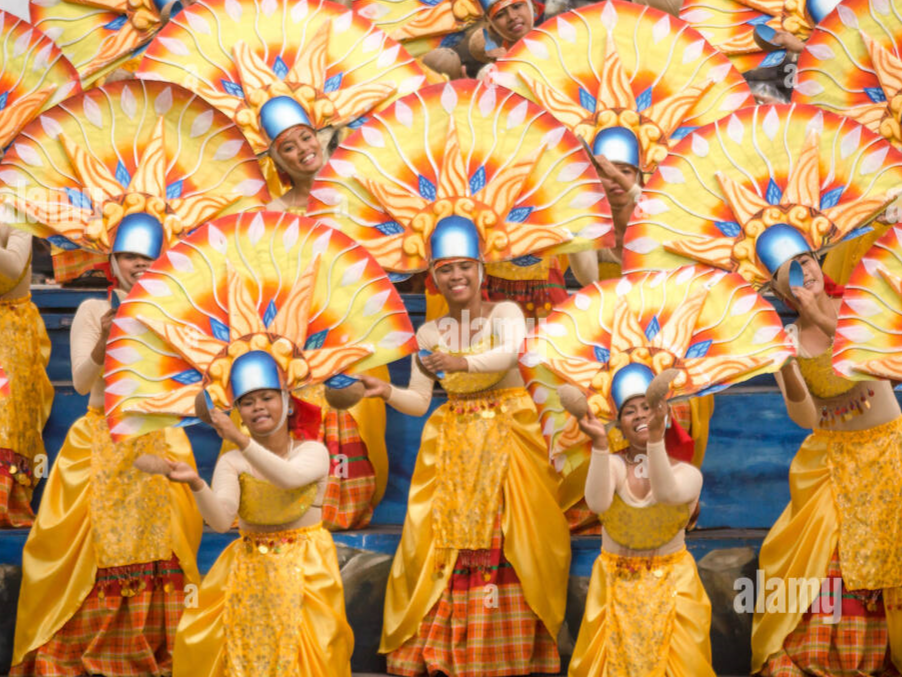
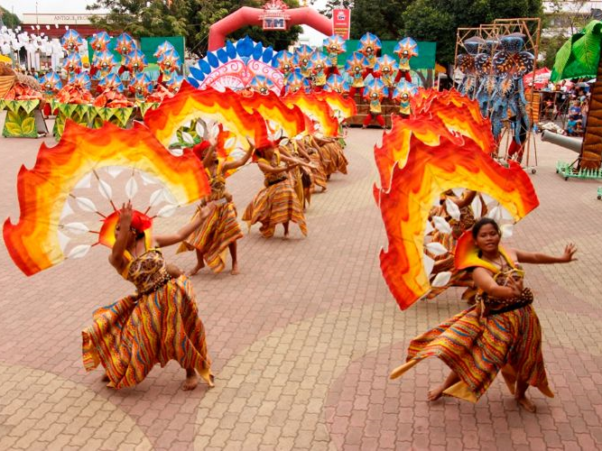

Antique - The Hidden Gem
🥮 Binirayan festival

|
 |
 |
The Binirayan Festival, first celebrated in San Jose de Buenavista in 1974 under the leadership of Governor Evelio Javier, is a week-long cultural event that showcases the rich history and traditions of Antique. The festival features colorful street parades, beach presentations, plaza concerts, beauty pageants, and trade fairs, drawing both locals and visitors into a vibrant celebration of Antiqueño identity. Over the years, it has become one of the province’s most significant cultural and tourism events.
The term “Binirayan” comes from the word biray, meaning “sailboat” in Kinaray-a, the local language of Antique. It refers to the pre-Hispanic legend of the ten Bornean datus who journeyed by boat and landed on the shores of Malandog. According to tradition, these datus befriended the indigenous Ati (Aeta) people and eventually established a thriving settlement, marking the beginnings of organized society in Panay Island.
Antique tradition holds that the island was founded by Bornean Malays as early as the 12th century. While this narrative was once dismissed by some as purely mythical, more recent studies suggest that elements of the story may be supported by historical references found in Chinese annals and early Spanish records that predate the Maragtas account written by Pedro Monteclaro. These findings have renewed interest in the historical basis of the legend and its role in shaping regional identity.
According to the legend, the ten Bornean datus divided Panay Island among themselves, forming distinct settlements. Their leader, Datu Sumakwel, is believed to have founded one of the earliest communities in Malandog, located in present-day Hamtic, Antique. This story continues to be a central theme of the Binirayan Festival, celebrated through reenactments, performances, and cultural displays that bring the province’s origin narrative to life.
Today, the festival serves not only as a commemoration of Antique’s legendary beginnings but also as a symbol of unity, resilience, and cultural pride. It reflects how history—whether documented or passed down through oral tradition—continues to influence the identity and spirit of the Antiqueño people.